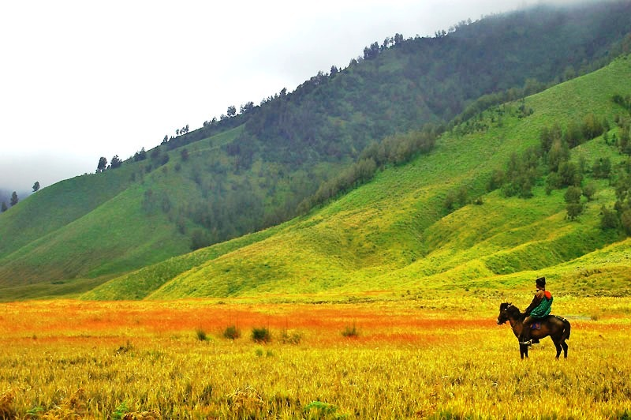
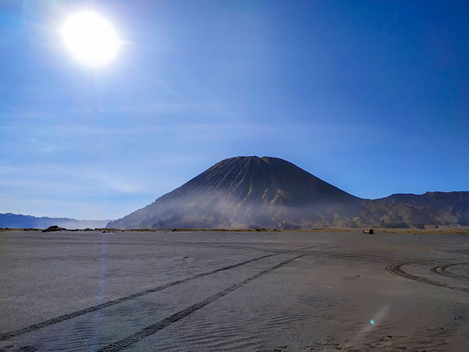

Ini adalah kawah aktif dari gunung Bromo itu sendiri. Untuk
mencapai kawah ini, Anda dapat naik tangga dari area parkir atau
menggunakan jasa kuda atau jeep yang tersedia.

Savana Bromo
Terletak tidak jauh dari kawasan Bromo, padang rumput yang hijau
ini memberikan pemandangan kontras yang menarik dengan keindahan
gurun dan gunung sekitarnya.

Pasir Berbisik
Tempat ini berada di kaki Gunung Bromo. Seperti namanya, pasir
putih lembut di sini akan mengeluarkan suara berbisik saat angin
bertiup.